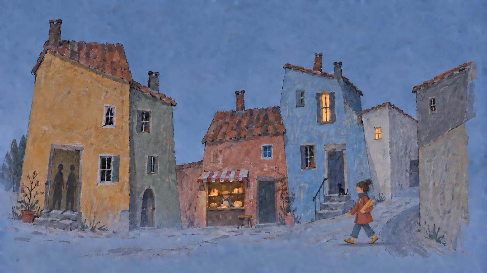
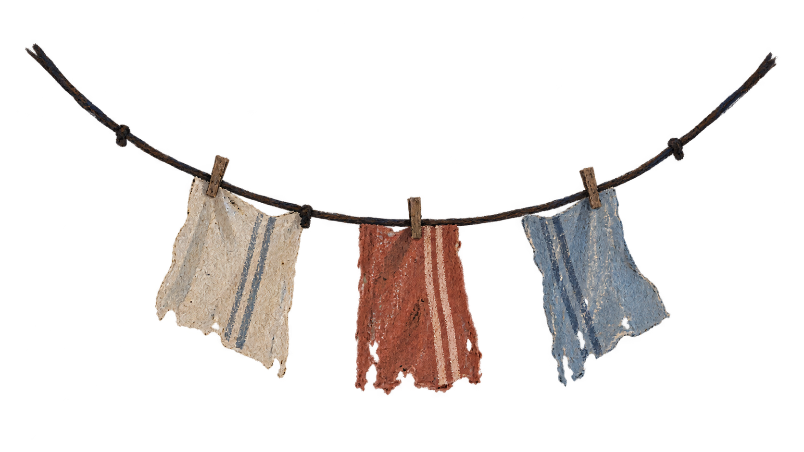
Quelque part, après le dernier virage
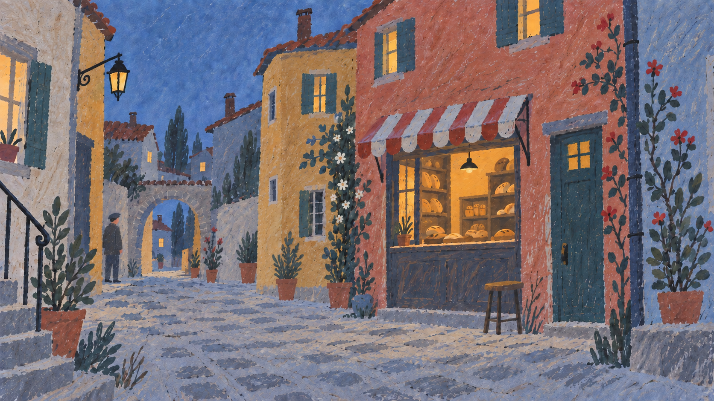
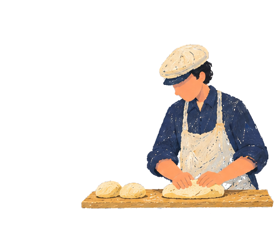
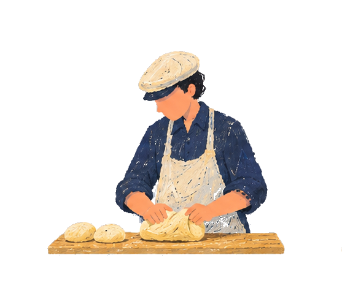
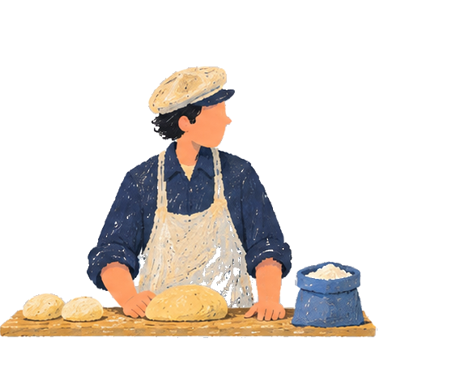
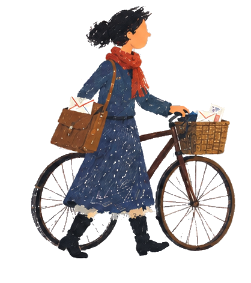
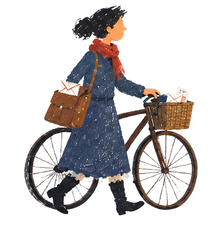
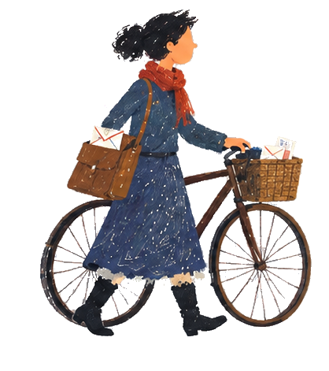
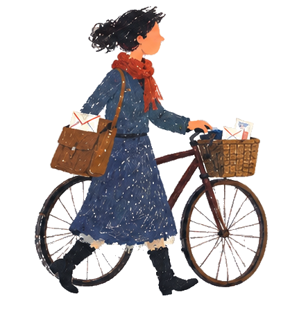
Quelque chose de bleu s’échappe de la boulangerie.
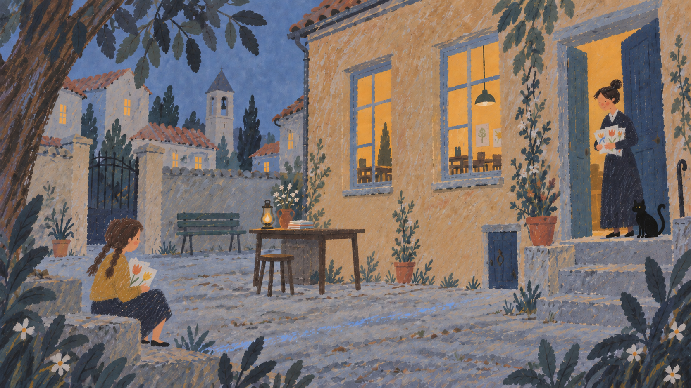
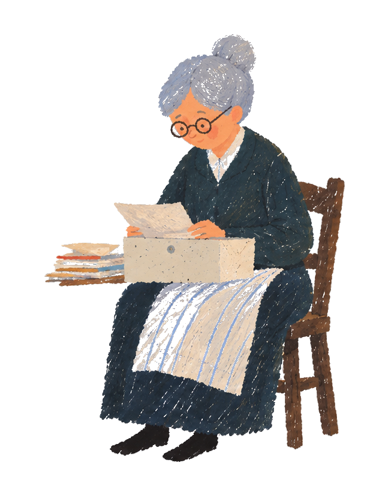
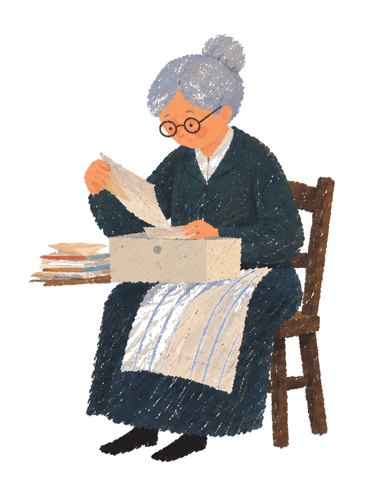
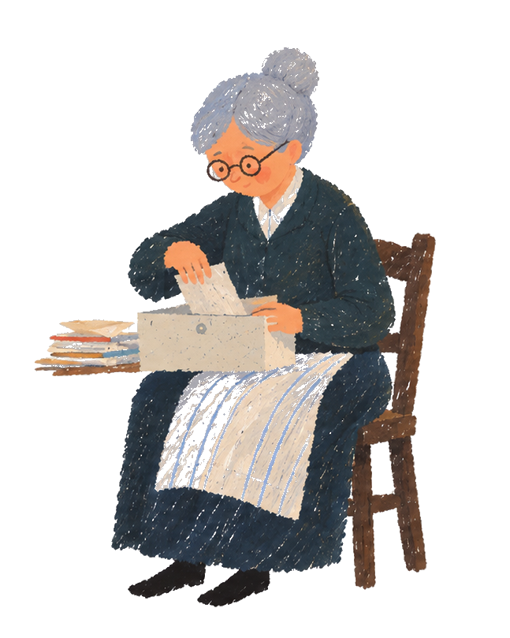
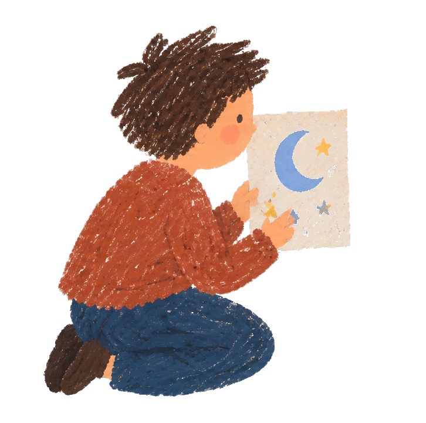
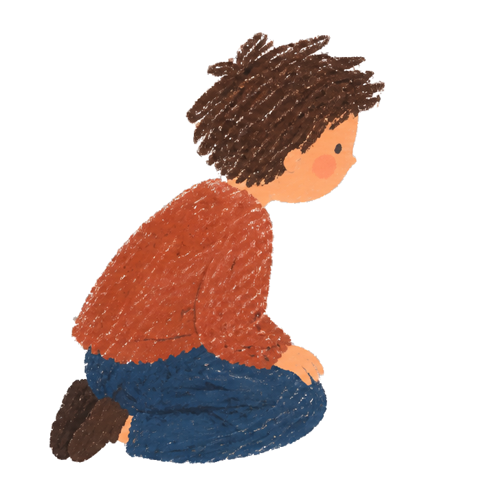
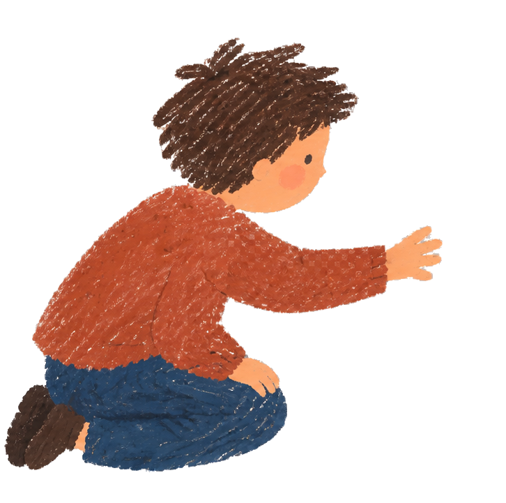
Le dessin et la petite porte ont la même poignée.
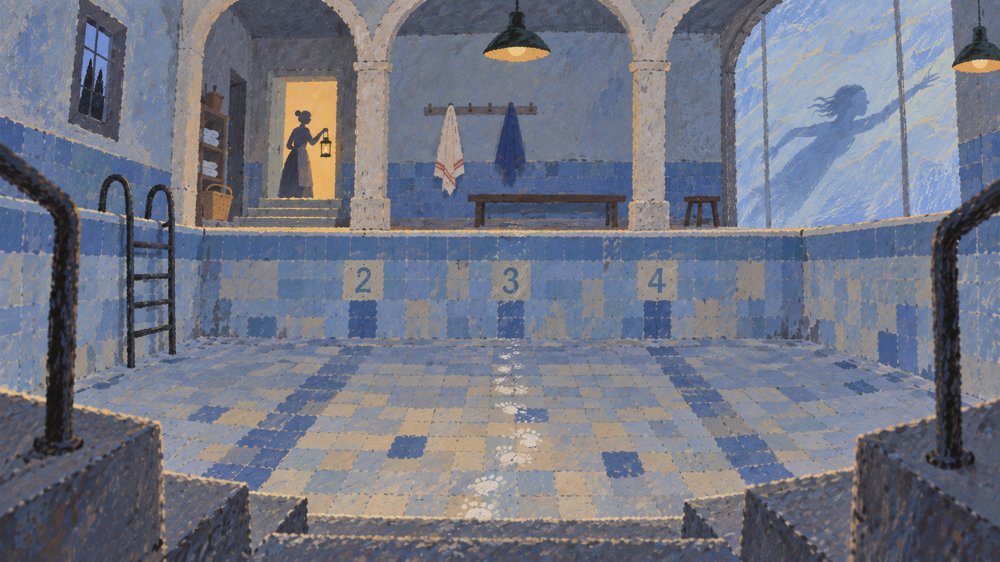
Il n’y a pas d’eau. Pourtant quelqu’un vient de faire demi-tour.
Quelque chose se souvient de tes pas.